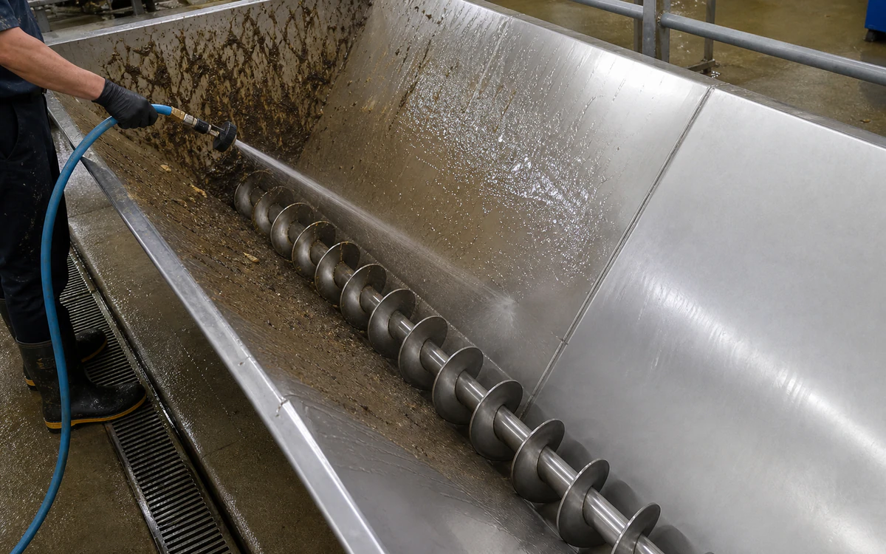
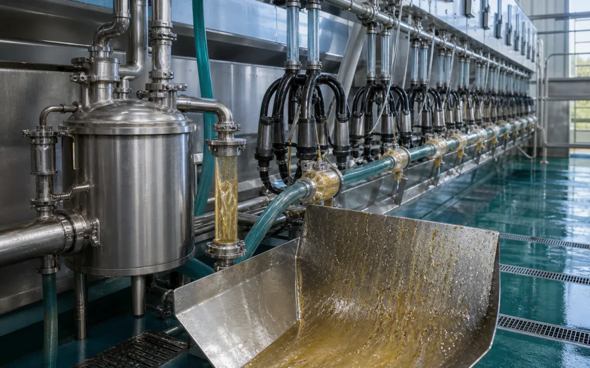

Industries › Agriculture & Farm Operations
Target crop residue, grease, and fertilizer deposits with the right chemistry.
MultiWash and CR HD lift crop residue, grease, and farm grime. HCR breaks down fertilizer salts and hard mineral film.
- CleanHarvest and packing equipment, bins, hoppers, augers, milking components, wash pads, utility vehicles, irrigation parts, and drains
- RemovePlant residue, soil, fertilizer salt, grease, manure-adjacent organic buildup, milk film, and hard-water scale
- Start withPick up loose material first, wash or circulate the right cleaner, brush where needed, recover the wash water, and rinse fully
- ProductsVertKleen MultiWash, VertKleen CR HD, VertKleen CIP HCR
- HMIS0-0-0 across every VertKleen product offered
- See products, first-test plan, and results
Cleaning chemistry for Agriculture & Farm Operations.
The right cleaner means fewer repeat passes, less water, and less time spent on each job.
See VertKleen results

Recommended
VertKleen products for Agriculture & Farm Operations.
Match the formula to the soil, surface, and cleaning process.
Where VertKleen fits
Remove crop residue, farm soil, fertilizer salts, grease, and mineral film from equipment and wash areas.
- Cleaning job
- Remove crop residue, farm soil, fertilizer salts, grease, and mineral film from equipment and wash areas.
- Equipment and surfaces
- Harvest and packing equipment, bins, hoppers, augers, milking components, wash pads, utility vehicles, irrigation parts, and drains
- What needs to come off
- Plant residue, soil, fertilizer salt, grease, manure-adjacent organic buildup, milk film, and hard-water scale
- Products to start with
- VertKleen MultiWash, VertKleen CR HD, VertKleen CIP HCR
- How to clean
- Pick up loose material first, wash or circulate the right cleaner, brush where needed, recover the wash water, and rinse fully
- What to compare
- Finished result, crew time, product, water, passes, downtime, and repeat work.
Product files
Get the SDS, TDS, and product records your team needs.
Start with one job